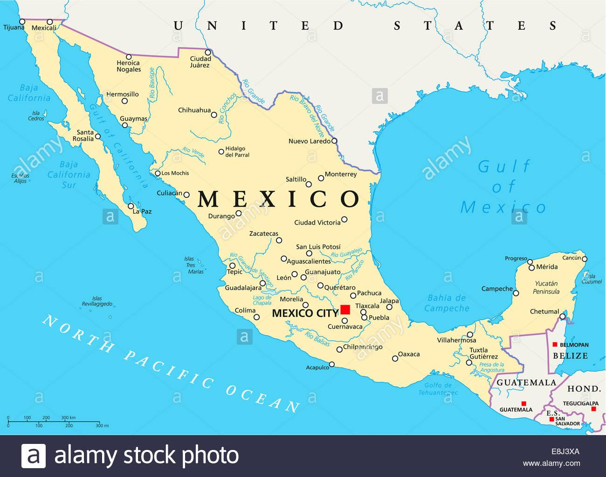

Az Axolotl
A harántfogú gőték családjába tartozó axolotl őshazája Mexikó. A 28-35 centiméter hosszú állat színe eredetileg szürkésbarna, testét sötétebb és világosabb foltok tarkítják. Természetes környezetben az axolotlok ragadozó életmódot folytatnak: kedvenc eledeleik közé tartoznak a vízi férgek, csigák, rákok és a kisebb halak.
Érdekességek:
-
Regenerálhatják a testrészeket Számos kétéltű és hal képes regenerálni a farkat és a végtagokat, de az axolotlok ezt a képességet az állkapcsok, a gerincvelők, a bőr, a petefészek és a tüdőszövet, sőt szívük és agyuk egy részének regenerálásával is tovább fokozzák. Mi több, az axolotl egész életében képes regenerálódni.
Ennek az állatnak a sejtjeinek regenerációs képességei jelentős érdeklődésre tartanak számot a kutatók számára, akik azt remélik, hogy ezt a képességet az emberekre is átültetik. Ez egy figyelemre méltó képesség: ha az axolotl elveszíti egy végtagját, akkor regenerálódik, és tökéletesen helyreállítja a függeléket a megfelelő méretre és tájolásra. Heteken belül a régi és az új szövet közötti csomópont teljesen eltűnik.
-
Csak egy kis mexikói régióban található meg, az axolotl vadon kritikusan veszélyeztetett. 11 Kevesebb mint négy négyzetmérföldet foglalnak el egy olyan élőhelyen, amely a fejlődés, a szennyezés és az invazív fajok miatt súlyosan hanyatlik. A tudományos kutatásban betöltött jelentőségük és fogságban tenyészthetőségük elősegíti túlélésüket, de nem feltétlenül a vadonban. 2009-ben a tudósok becslése szerint népességük 90%-kal csökkent. 2015-ben kihaltnak nyilvánították őket a vadonban, de egy héttel később találtak egyet. (A képre kattintva megnyithatja a térképet)
 -
Néhány fiatal axolotl kannibál! Igen, a zord valóság az, hogy sok fiatal axolotl nem gondolna kétszer arra, hogy születése után rágcsálja testvéreit. Ne aggódjon, mivel ez nem halálos ítélet.
-
az axolotlok újra növesztik saját testrészeiket. Igen, jól olvastad, és ez nem a sci-fi dolga. Ha az axolotlok megsérülnek, néhány más szalamandrafajhoz hasonlóan újra növesztik a hiányzó végtagjaikat, beleértve a kezeket, lábakat és még a farkat is. Szerveket is növeszthetnek. Ez az egyedülálló képesség azt jelenti, hogy rendszeresen használják tudományos kutatásokhoz.
-
Az álcázás mesterei, az axolotlok beállíthatják színeiket, hogy elrejtőzzenek a ragadozók és a zsákmány elől. Ez egy olyan tulajdonság, amelyet ezek az okos lények megosztanak a szalamandracsalád többi tagjával.
| Élőhelye: | Mexikó |
| Tudományos neve: | Ambystoma mexicanum |
| Természetvédelmi státusz: | |
| Súlyosan veszélyeztetett | |
| Nevének jelentése: | Vízi kutya |